ホーム
アフターケア・ビフォア加工
染め替え（顔彩工芸・螺鈿工芸）
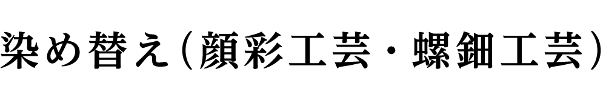
顔彩・螺鈿
柄の例
■顔彩・螺鈿
色無地・江戸小紋・鮫小紋としての役目が終わった着物を付下げとして蘇らせる
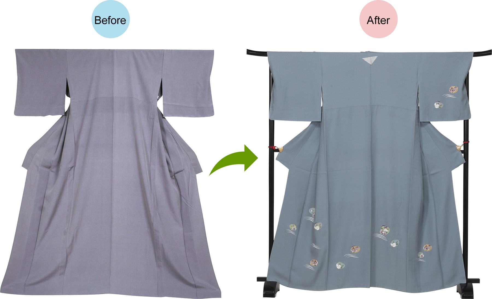
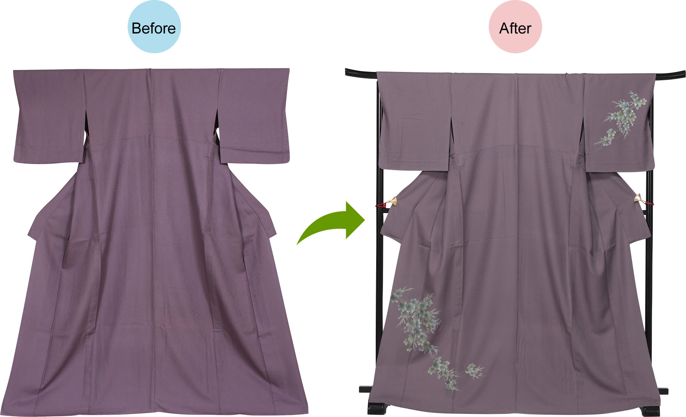
■柄の例
No.1 顔彩・螺鈿工芸パターン：白い地場 全体箔
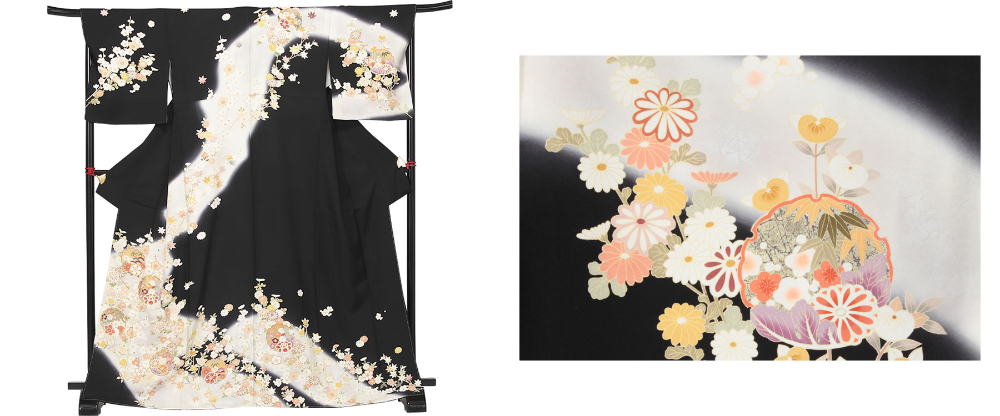
No.2 顔彩・螺鈿工芸パターン：全体金彩 もみじ
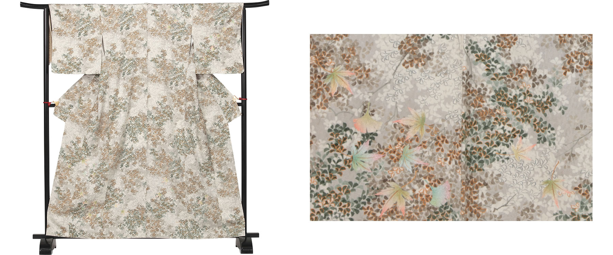
No.3 顔彩・螺鈿工芸パターン：金彩螺鈿 テープ柄
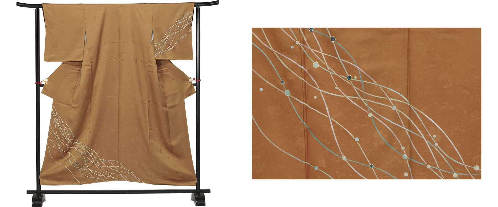
No.4 顔彩・螺鈿工芸パターン：金彩螺鈿 花丸道長
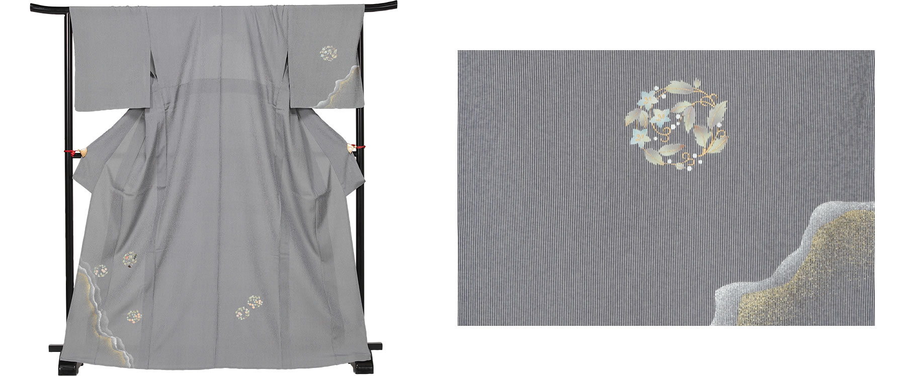
No.5 顔彩・螺鈿工芸パターン：金彩 白いシダグリッター
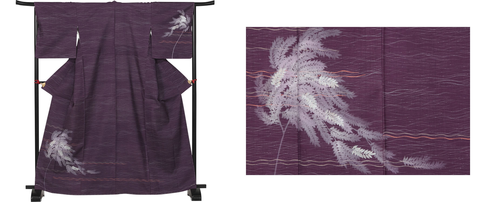
No.6 顔彩・螺鈿工芸パターン：金彩螺鈿 葛の花
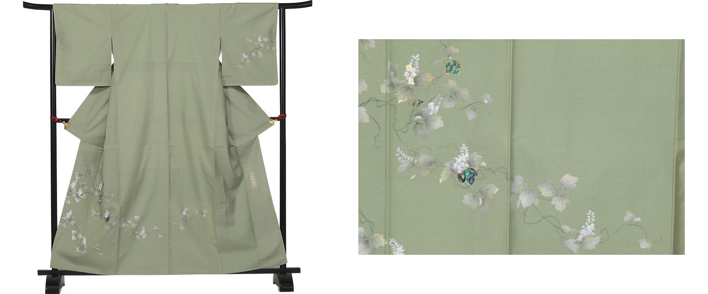
No.7 顔彩・螺鈿工芸パターン：金彩螺鈿 花丸
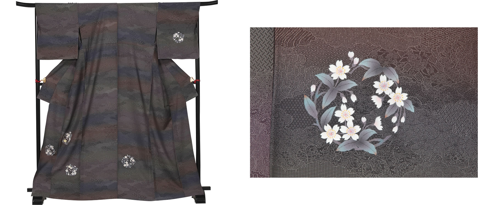
No.8 顔彩・螺鈿工芸パターン：金彩螺鈿 春欄かすみ草
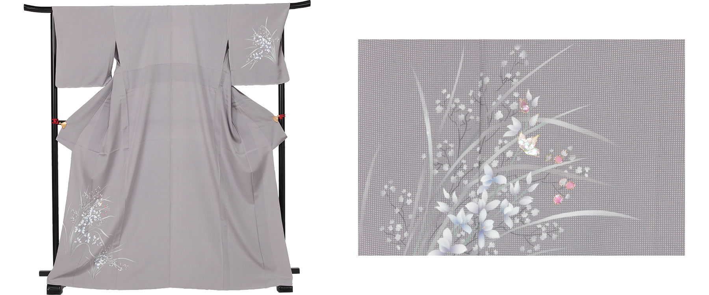
No.9 顔彩・螺鈿工芸パターン：蝶々 フロッキー
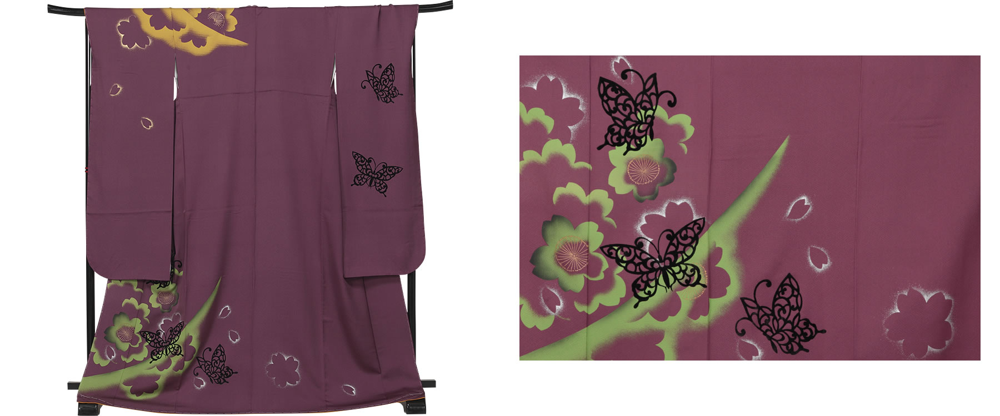
No.10 顔彩・螺鈿工芸パターン：金彩螺鈿 ふすまさくら
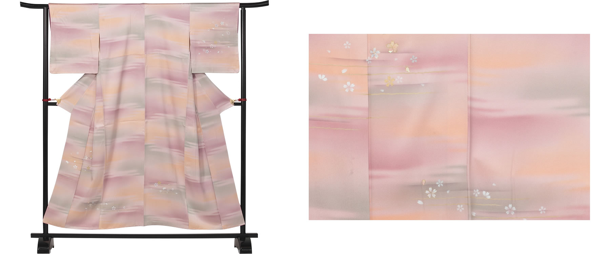
No.11 顔彩・螺鈿工芸パターン：さくら フロッキー
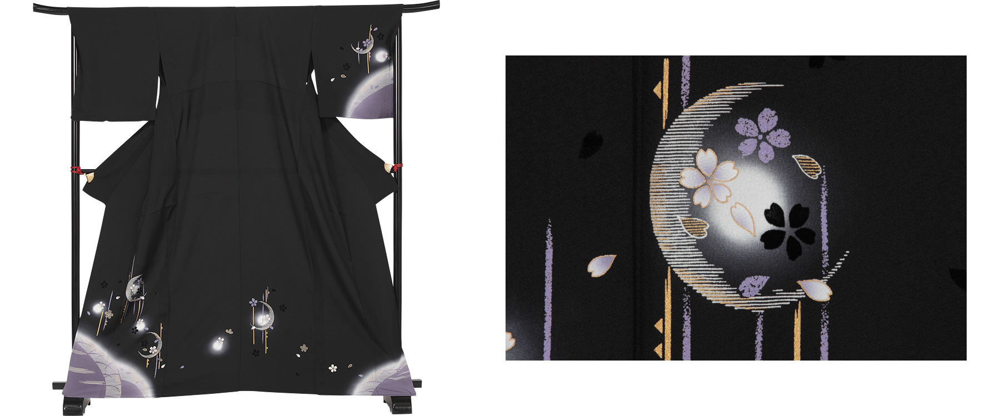
No.12 顔彩・螺鈿工芸パターン：金彩螺鈿 笹
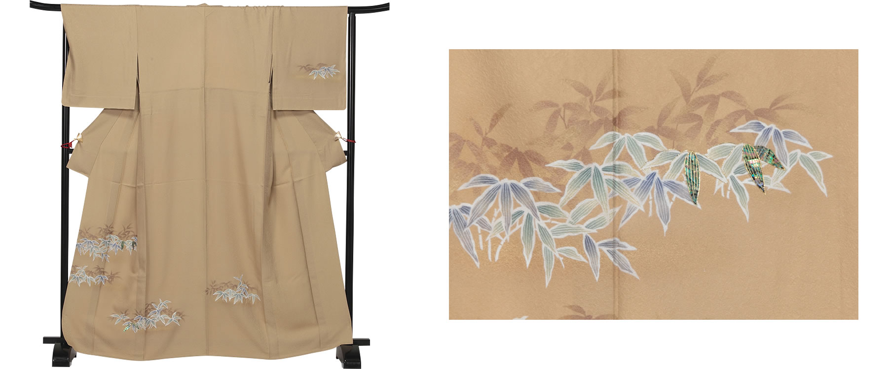
No.13 顔彩・螺鈿工芸パターン：金彩螺鈿 吹き寄せ
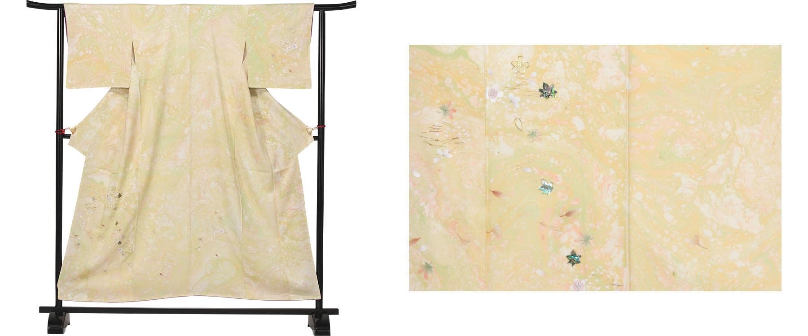
No.14 顔彩・螺鈿工芸パターン：金彩螺鈿 貝の柄
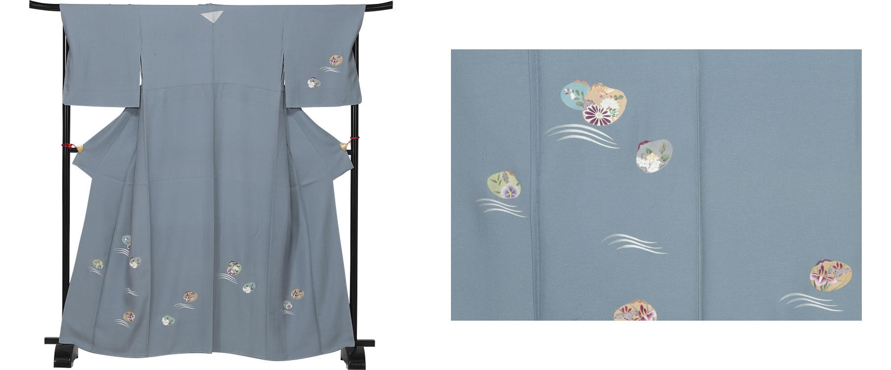
No.15 顔彩・螺鈿工芸パターン：金彩螺鈿 カトレアの柄
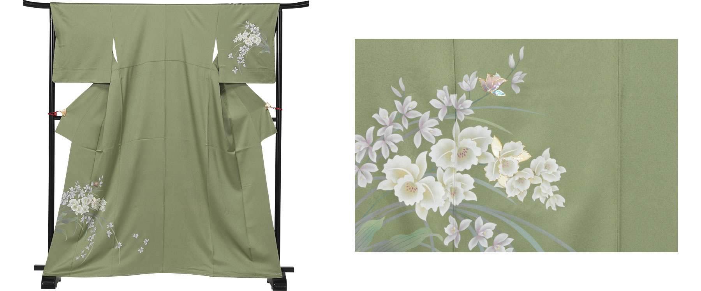
No.16 顔彩・螺鈿工芸パターン：金彩雲と逆雲
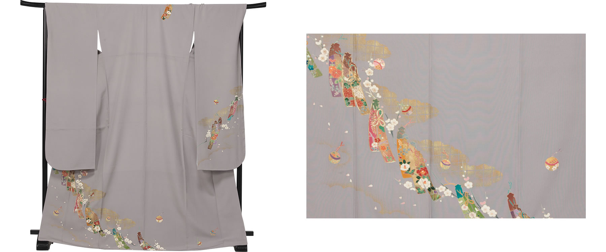
No.17 顔彩・螺鈿工芸パターン：金彩螺鈿 白上げ萩
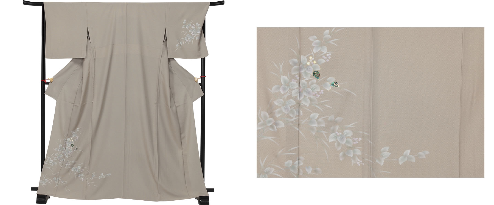
No.18 顔彩・螺鈿工芸パターン：金彩 白い枝
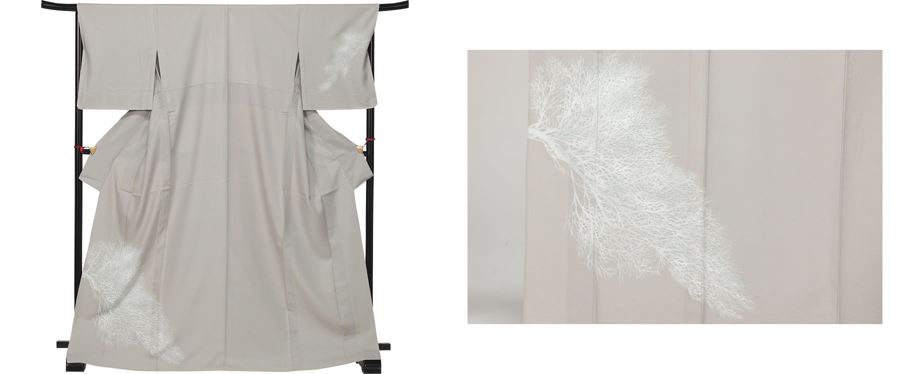
No.19 顔彩・螺鈿工芸パターン：金彩螺鈿 ぶとうの柄
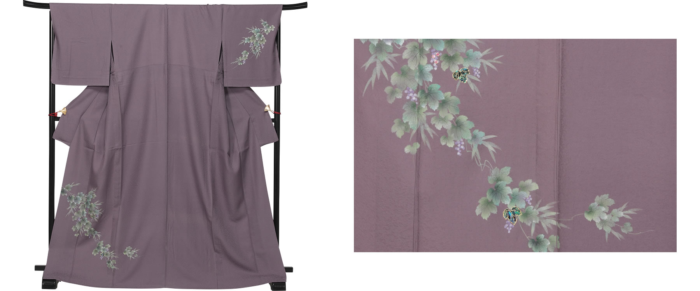
●実際の商品の色や柄の出方はカタログの写真と異なることがありますのでご了承ください。